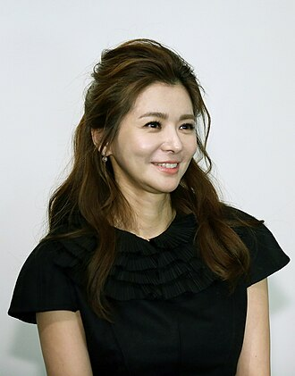
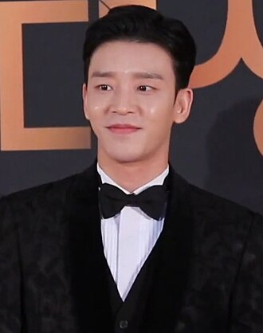

욕망의 덫 등장인물·인물관계도·몇부작·재방송 시간 정리

(이미지 출처: Pexels, 무료 라이선스 — 드라마와 관계없는 일반 이미지입니다)
"복수극의 여왕" 장서희 씨가 12년 만에 KBS로 돌아온 드라마라 처음부터 화제였죠. 저녁 7시 50분 KBS2에서 매일 이어지는 「욕망의 덫」, 인물이 많고 관계가 얽혀 있어 중간부터 보면 헷갈리기 쉽습니다. 한 번에 정리해 드립니다.
기본 방송 정보
| 항목 | 내용 |
|---|---|
| 채널 | KBS 2TV |
| 본방송 | 평일 저녁 7시 50분 |
| 재방송 | 다음 날 아침 9시 20분, KBS2 (11월 셋째 주 편성표 기준) |
| 첫 방송 | 2026년 8월 10일 |
| 분량 | 100부작 |
| 극본·연출 | 구지원 작가 / 이대경·정광수 감독 |
「붉은 진주」 후속으로 시작했습니다. 저녁 본방을 놓치셨으면 다음 날 아침 재방송으로 따라잡으시면 됩니다.
예고편으로 먼저 보기
어떤 이야기인가요
유모로 위장해 재벌가에 들어간 여자 주미란이 거대한 판을 짜며 복수를 계획하고, 살인 누명을 쓴 고은설이 청마그룹 상속녀와 얽히며 인생이 뒤흔들리는 이야기입니다. 주미란이 예전에 '주애숙'이라는 이름으로 살았다는 비밀, 그리고 그가 고은설의 친엄마일지도 모른다는 의혹이 이야기의 큰 줄기입니다.
등장인물과 인물관계도
주미란과 고은설

주미란장서희유모로 위장해 복수를 꾸미는 인물, 옛 이름 '주애숙'- 고은설전혜원살인 누명을 쓴 디자인팀 신입
청마그룹
- 강영훈유태웅청마그룹을 이끄는 인물
- 강해라주새벽그룹 상속녀, 디자인팀 팀장

차석진설정환전략기획본부장, 고은설의 첫사랑- 김정선윤해영청마장학재단 이사장
주요 관계
- 주미란고은설친모일지도 모른다는 의혹
- 고은설강해라같은 디자인팀의 신입과 팀장, 라이벌
- 고은설차석진학교 선배이자 첫사랑
- 강해라차석진강해라가 마음에 둔 사람
- 주미란강해라곁에서 조언하며 이용하는 관계
공개된 보도자료 기준으로 정리했고, 방송이 진행되면 이어서 고쳐 둡니다. 사진이 없는 인물은 자유 라이선스 사진이 확인되지 않은 경우입니다.
사진: 장서희 — Korea.net / Korean Culture and Information Service (Jeon Han), CC BY-SA 2.0, 위키미디어 공용 · 설정환 — NewsInStar, CC BY 3.0, 위키미디어 공용
자주 묻는 질문: 욕망의 덫은 몇부작인가요? 100부작으로 기획됐습니다. 평일 매일 방송이라 8월에 시작해 이듬해 1월쯤까지 이어지는 일정입니다.
자주 묻는 질문: 욕망의 덫 재방송은 언제 하나요? 11월 셋째 주 편성표 기준으로 다음 날 아침 9시 20분 KBS2에서 재방송합니다. 주마다 바뀔 수 있으니 KBS 편성표를 함께 확인하세요.
계속 정리해 둘게요
주미란과 고은설의 관계처럼 아직 극 중에서 확정되지 않은 부분은 "의혹"으로만 적었습니다. 이야기가 진행되며 밝혀지는 대로 이 글을 고쳐 두겠습니다.